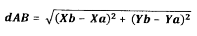

Exercices
Fiches patients
Un médecin veut rechercher les fiches de ses patients en connaissant leurs noms.
Les noms des patients sont enregistrés dans un tableau noms non ordonné.
Travail demandé
Ecrire un programme qui :
- Saisit le nombre de patients
np, 3 ≤ np ≤ 100. - Saisit les noms des patients dans un tableau
noms, les noms doivent être distincts deux à deux. - Saisit le nom du patient à rechercher
nom_patient. - Cherche et puis affiche le numéro de sa fiche.
- L'utilisateur peut décider de faire une nouvelle recherche ou d'arrêter le programme en tapant : fin
Entrer le nombre de patients [3, 100] ? 15
Nom patient 1 ? Ahmed
Nom patient 2 ? Yassine
Nom patient 3 ? Olfa
Nom patient 4 ? Amel
Nom patient 5 ? Ikram
Nom patient 6 ? Sami
Nom patient 7 ? Ahmed
Ahmed existe déjà!
Nom patient 7 ? Youssef
Nom patient 8 ? Fadwa
Nom patient 9 ? olfa
olfa existe déjà!
Nom patient 9 ? Eya
Nom patient 10 ? Amira
Nom patient 11 ? Aymen
Nom patient 12 ? Karim
Nom patient 13 ? Sahbi
Nom patient 14 ? Adem
Nom patient 15 ? Aymen
Aymen existe déjà!
Nom patient 15 ? olfa
olfa existe déjà!
Nom patient 15 ? Eya
Eya existe déjà!
Nom patient 15 ? Ayoub
Nom patient à rechercher ? Sami
'Sami' possède la fiche n°6
Nom patient à rechercher ? Fadwa
'Fadwa' possède la fiche n°8
Nom patient à rechercher ? Samia
'Samia' n'est pas notre patient!
Nom patient à rechercher ? Youssef
'Youssef' possède la fiche n°7
Nom patient à rechercher ? fin
'fin' n'est pas notre patient!Bac Théorique 2016
Un bateau en détresse a lancé un appel de secours (SOS). Pour le sauver le commandant de la garde côte a besoin de localiser le(s) bateau(x) proche(s) de celui-ci. En s'appuyant sur leurs coordonées (x, y) fournis par le radar du commandant (comme illustré dans la figure ci-dessous), la localisation des bateaux se fait par le calcul des distances qui les séparent du bateau en détresse.
Pour aider le commandant de la garde côte, on se propose d'écrire un programme sui :
- Saisit les coordonnées du bateau en détresse (
Xd,Yd). - Saisit les coordonnées de
nautres bateaux dans deux tableauxTxetTy, avec 1 ≤ n ≤ 50,Txcontient les abcisses etTycontient les ordonnées.
Il est a noter que deux bateaux ne peuvent pas avoir les mêmes coordonnées. - Remplit un tableau
Tdpar les distances qui séparent les différents bateaux du bateau en détresse.
NB : La distance d(AB) qui sépare deux points A et B de coordonées respectives (Xa, Ya) et (Xb, Yb) est calculée comme suit  - Affiche les coordonnées (X, Y) des bateaux du plus proches au plus loin du bateau en détresse.
Exemple
Pour les coordonnées du bateau en détresse (Xd, yd) = (500, 300), le nombre de bateaux n = 5 et
les deux tableaux Tx et Ty suivants :
| Tx | 1000 | 500 | 100.25 | -350 | 1200 |
| 0 | 1 | 2 | 3 | 4 |
| Ty | -300 | 400 | -90 | 75 | 358.14 |
| 0 | 1 | 2 | 3 | 4 |
Le calcul des distances donne le tableau Td suivant :
| Td | 781.02 | 100 | 558.48 | 879.28 | 702.41 |
| 0 | 1 | 2 | 3 | 4 |
Le programme afficheles coordonnées (X, Y) des bateaux, comme suit :
(1000, -300) - (500, 400) - (100.25, -90) - (-350, 75) - (1200, 358.14)
Travail demandé
- Analyser le problème en le décomposant en modules.
- Analyser chacun des modules envisagés.